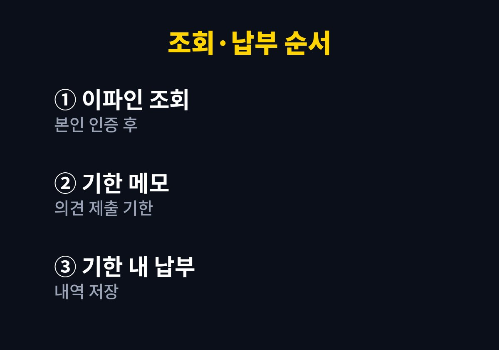

단속 카메라를 지난 것 같은데 고지서가 언제 올지 몰라 마음이 불편한 사람이라면 끝까지 읽어 볼 만하다.
2026년 11월 기준 경찰청 교통민원24(이파인)와 지자체 안내에서 확인한 조회 방법과 내가 실제로 납부까지 처리한 순서를 정리했다.
우편함을 자주 못 보는 바쁜 집일수록 미리 조회하는 습관이 돈을 아껴 준다.
쇼핑몰 택배와 아이 학교 안내문이 섞인 우편함은 하루 이틀 미루면 금세 쌓인다.
나는 한 번 과태료 고지서를 뒤늦게 발견해 감경받을 수 있는 기한을 거의 넘길 뻔했다.
그 뒤로는 고지서를 기다리지 않고 내가 먼저 조회하는 쪽으로 방식을 바꿨다.
무인 카메라에 찍히면 보통 차량 소유자에게 과태료가 나온다.
반면 경찰관에게 직접 단속되면 운전자에게 범칙금이 부과되고 위반 내용에 따라 벌점이 따라올 수 있다.
어떤 쪽인지 알아야 납부 방법과 기한을 헷갈리지 않는다.
단속이 됐는지 안 됐는지 모르는 상태로 지내는 것이 생각보다 신경 쓰였다.
특히 처음 가 본 길에서 카메라를 지나친 날에는 며칠 동안 계속 마음에 걸렸다.
조회해서 내역이 없다는 것을 확인하면 그 걱정을 바로 내려놓을 수 있었다.
경찰청이 부과한 과태료와 범칙금은 교통민원24(이파인)에서 본인 인증 후 조회하고 납부할 수 있다.
주정차 위반처럼 지자체가 단속한 과태료는 해당 지자체 안내와 지방세 납부 서비스에서 확인하는 경우가 많다.
과태료는 의견 제출 기한 안에 스스로 납부하면 20% 감경을 받을 수 있다고 안내되어 있다.
나는 처음에 과태료와 범칙금을 같은 것으로 알고 한 곳에서만 찾았다.
단속한 기관이 어디인지에 따라 조회하는 곳이 달라진다는 것을 알고 나서야 내역이 정리되어 보였다.
그래서 표로 한 번 나눠 두고 필요할 때마다 다시 꺼내 본다.
| 구분 | 부과 대상 | 조회하는 곳 |
|---|---|---|
| 경찰청 과태료 | 차량 소유자 | 교통민원24(이파인) |
| 범칙금 | 운전자 | 교통민원24(이파인) |
| 주정차 과태료 | 차량 소유자 | 단속한 지자체 안내 |
나는 매달 정산하는 날에 교통민원24에 들어가 미납 내역이 있는지 함께 확인한다.
가족이 같이 타는 차라면 소유자 명의로 조회해야 과태료 내역이 보인다는 점도 기억해 두었다.
내역이 없으면 그것으로 마음이 편해지고 있으면 바로 기한을 메모한다.
사전 통지를 받으면 의견 제출 기한부터 확인하고 이견이 없으면 그 안에 납부한다.
이렇게 하면 감경을 받고 가산금 걱정도 덜 수 있었다.
억울한 단속이라고 판단되면 납부하지 말고 기한 안에 의견을 제출하는 것이 순서다.
납부를 마치면 화면을 캡처해 차량 관련 폴더에 날짜와 함께 저장한다.
나중에 같은 건으로 안내가 다시 오더라도 납부 사실을 바로 보여줄 수 있어 안심이 된다.
사업 장부를 정리하듯 차량 관련 지출도 한곳에 모아 두니 연말에 돌아보기도 쉬웠다.
아래 순서는 처음 조회하는 사람도 헷갈리지 않도록 내가 실제로 하는 흐름대로 적은 것이다.
순서대로 따라가면 어느 기관 내역인지와 언제까지 납부해야 하는지가 한 번에 정리된다.

과태료는 피할 수 없을 때가 있지만 늦게 알아서 더 내는 일은 습관으로 줄일 수 있다.
감경 비율과 기한은 위반 종류와 부과 기관에 따라 다를 수 있어 고지서와 공식 안내를 기준으로 판단하는 것이 안전하다.
나는 조회 날을 정한 뒤로 우편함을 뒤지는 불안이 사라졌다.
다음 글에서는 고속도로 통행료 미납을 확인하고 정리하는 방법을 다룰 예정이다.
※ 2026년 기준 공공기관 안내와 개인 경험을 바탕으로 정리한 글이며, 차종과 연식에 따라 기준이 다를 수 있어 차량 설명서와 공식 안내를 함께 확인하길 바란다.